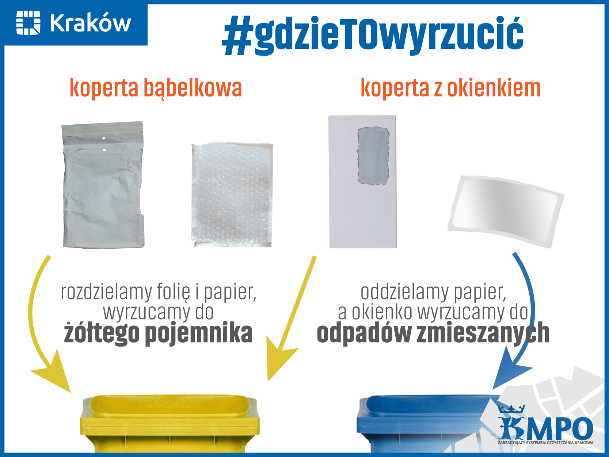

Chcę segregować śmieci, ale skąd mam wiedzieć jak?
Od 1 kwietnia w Krakowie pojawi się podział na 5 pojemników. Poza tym istnieją śmieci, które nie powinny być wyrzucane do żadnego z kubłów dostępnych u nas pod domami. Najzwięźlej obrazuje to następująca grafika zaczerpnięta ze strony krakowskiego MPO.
A co jeśli nadal czegoś nie wiem?
Dobrym źródłem informacji jest krakowskie MPO, które prowadzi swój profil na facebooku w bardzo przystępny sposób. Jeśli nie wierzysz, sprawdź tutaj! Sama byłam zdziwiona tym, jak dużo można się tam dowiedzieć!
Zaskakujące fakty
Czasami bardzo się staramy, jednak okazuje się, że brakuje nam wiedzy i przez to popełniamy błędy. Parę przykładów możemy znaleźć poniżej. Jeśli temat segregacji nie ma przed Tobą tajemnic możesz spróbować swoich sił w . Jeśli jednak wolisz zacząć od zapoznania się z paroma często pojawiającymi się problemami to zapraszam do lektury poniższej listy.
Karton po pizzy, hmmm... I tutaj pojawia się haczyk. |
|
Naczynia i zbite szkło też nie są tak oczywiste. |
|
Gdzie wyrzucać puste opakowania po lekach? Ważne jest, żeby pamiętać, że leków nie należy wyrzucać do śmieci, tylko do zbiorników na leki znajdujących się w niektórych aptekach. |
|
A co z kopertami? |
 |
A opakowania po kosmetykach? |
|
A co z pozostałościami po kawie na wynos? |
Karton po pizzy, hmmm... I tutaj pojawia się haczyk. |
Naczynia i zbite szkło też nie są tak oczywiste. |
||
Gdzie wyrzucać puste opakowania po lekach? Ważne jest, żeby pamiętać, że leków nie należy wyrzucać do śmieci, tylko do zbiorników na leki znajdujących się w niektórych aptekach. |
A co z kopertami? |
||
A opakowania po kosmetykach? |
A co z pozostałościami po kawie na wynos? |